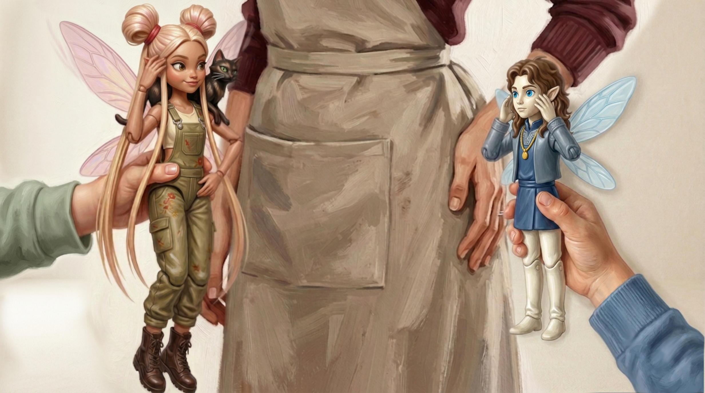

Keb ! Bek !
Le dîner est prêt.
— Keb ! Bek ! Le dîner est prêt.
Hover over a word to reveal its meaning — or tap it on mobile.
A different voice. This isn't Nagar or Zyeu-Bleu anymore — it's Bek's mom, Ginette, calling from off-camera. The whole game stops for a second. Notice the circumflex on dîner and the circumflex on prêt — small accent marks, but they change how the vowels sound.
The verb être (to be) — your first irregular verb
je
suis
tu
es
il / elle
est
Up until now, every verb form you've seen has been built by adding a regular ending to a stem (parl-e, parl-es...). Être throws that out the window completely. Suis, es, est — three completely different-looking forms for the same verb, with no shared root in sight. This isn't the norm in French; it's the exception among exceptions. Unfortunately, it's also one of the most useful verbs there is, so it's worth meeting early. In Ginette's line, le dîner (it, "the dinner") is il — so the verb is est: le dîner est prêt, "dinner is ready."